00:01欢迎来到本课程的第三周。
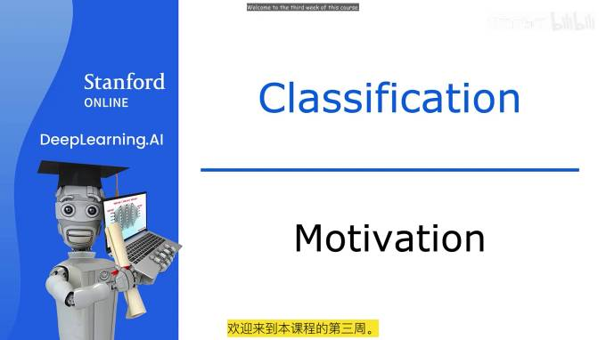
00:04到本周结束，你就完成了这个专项课程的第一门课。
00:11上周，你学习了线性回归，它预测的是一个数字。
00:16本周，你将学习分类，其中你的输出变量只能取少数几个可能值中的一个，而不是一个无限范围内的任意数字。
00:28事实证明，线性回归对于分类问题来说不是一个好的算法。我们来看看为什么，而这会将我们引向，一个不同的算法，称为逻辑回归，它是当今最受欢迎和应用最广泛的学习算法之一。
00:47这里有一些分类问题的例子。回想一下判断一封邮件是否为垃圾邮件的例子。
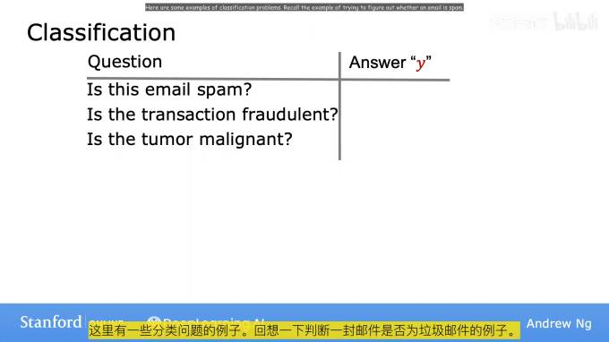
00:56那么，你想要输出的答案要么是“否”，要么是“是”。
01:02另一个例子将是判断一笔在线金融交易是否欺诈。
01:08打击在线金融欺诈是我曾经从事过的工作，那种感觉异常令人振奋，因为我知道外面有人试图偷钱，而我团队的职责就是阻止他们。
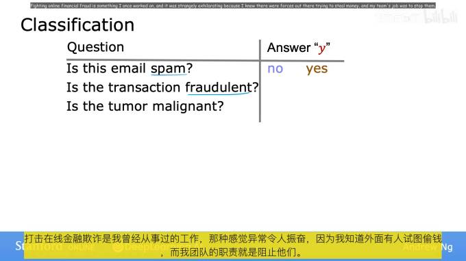
01:22所以，问题是，给定一笔金融交易，你的学习算法能否判断出这笔交易是否欺诈，比如这张信用卡是不是被盗了？。
01:34我们之前触及过的另一个例子是试图将肿瘤分类为恶性或非恶性。
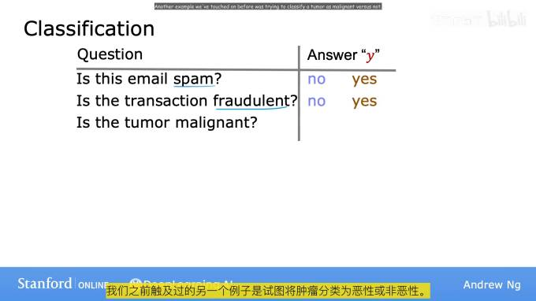
01:42在这每一个问题中，你想要预测的变量只能是两个可能值之一，否或是。
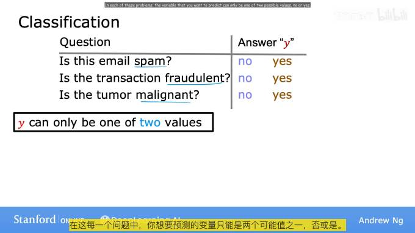
01:52这种只有两种可能输出的分类问题，被称为二元分类，其中二元一词指的是只有两个可能的类别，或者说两个可能的分类。
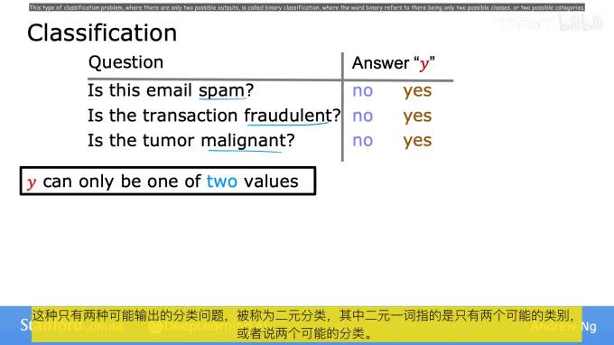
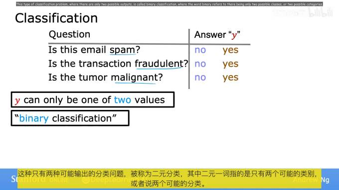
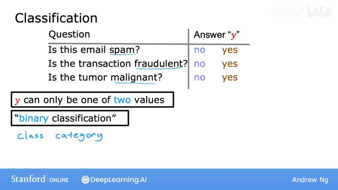
02:07在这些问题中，我会相对交替地使用类别和分类这两个术语。
02:15它们基本上指的是同一个意思。
02:18按照惯例，我们可以用几种常见的方式来指称这两个类别或分类。
02:25我们通常将类别指定为否或是，或者有时等效为假或真，或者非常普遍地使用数字零或一，这遵循了计算机科学中零表示假、一表示真的通用惯例。
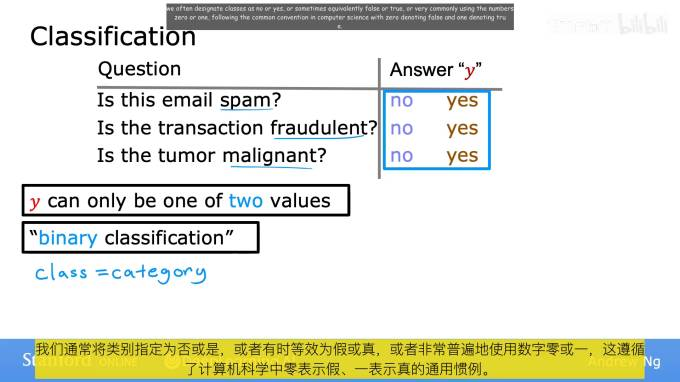
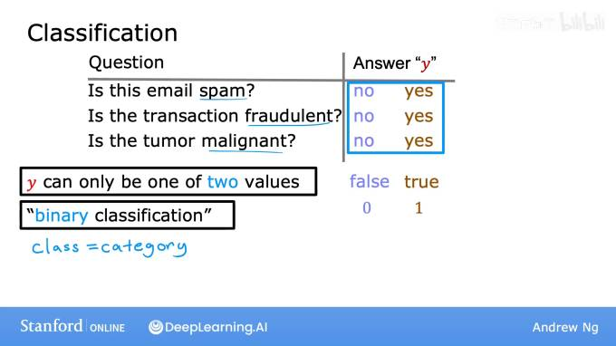
02:44我通常会使用数字零和一来表示答案 y，因为这将最贴合我们想要实现的学习算法类型。
02:56但当我们谈论它时，我们常常也会说否或是，或者假或真。
03:03常用的术语之一是将假或零类称为负类，而将真或一类称为正类。
03:15例如，对于垃圾邮件分类，一封非垃圾邮件可能被称为负例，因为对于“是否是垃圾邮件”这个问题，其输出为否或零。
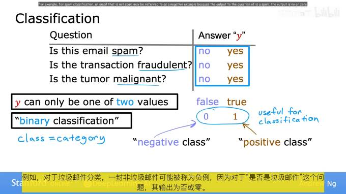
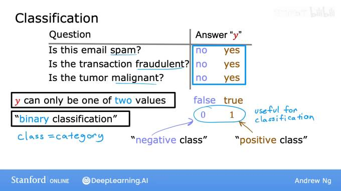
03:30相比之下，一封垃圾邮件可能被称为正训练样本，因为对于“是否是垃圾邮件”，其答案为是或真。
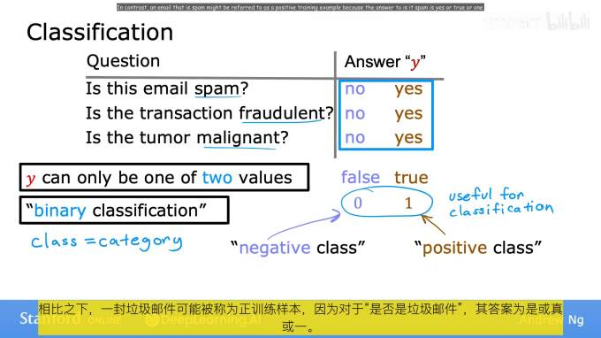
03:43需要明确的是，正和负并不一定意味着好与坏，或者邪恶与善良。
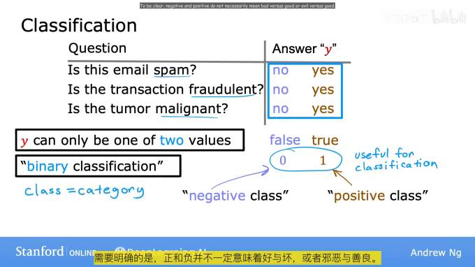
03:49正例和负例只是用来传达“不存在或零或假”相对于“存在或真或一”的概念，针对你可能正在寻找的某种东西。
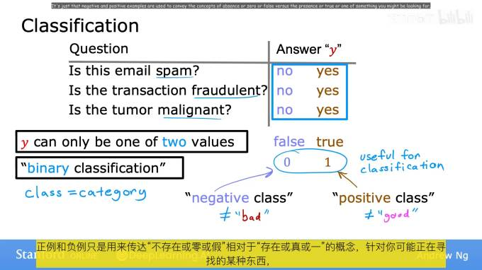
04:00比如一封邮件不存在或存在垃圾属性，或者一项活动中不存在或存在欺诈，或者一个肿瘤中不存在或存在恶性。
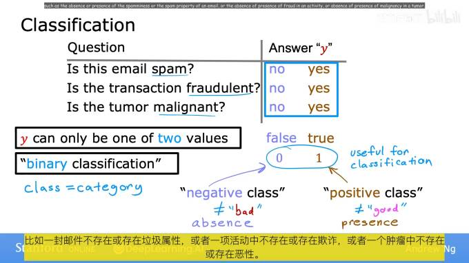
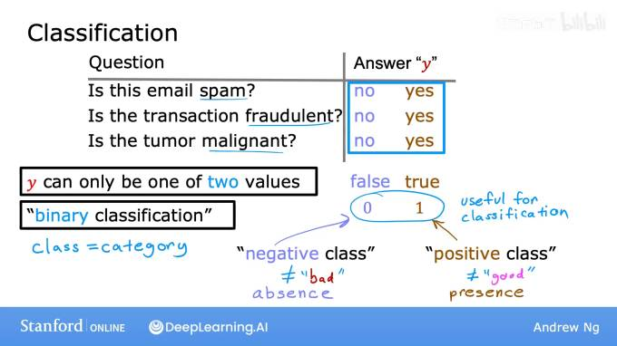
04:14在非垃圾邮件和垃圾邮件之间，你把哪个叫做假或零，把哪个叫做真或一是有点随意的。
04:24通常，任何一种选择都可行。
04:28所以，另一位工程师实际上可能会将其对调，让正类表示一封好邮件的存在，或者让正类表示一笔真实金融交易或一位健康病患的存在。
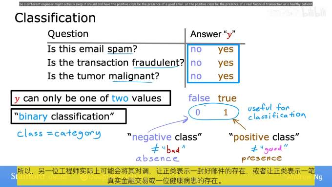
04:42那么，你如何构建一个分类算法呢？
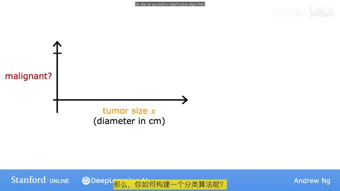
04:46这是一个训练集的示例，用于分类肿瘤是否为恶性。
04:51类别一，即正类、是类，或者良性类零，即负类。
05:00我将肿瘤大小画在横轴上，也将标签画在了纵轴上。
05:07顺便说一下，在第一周，当我们首次谈到分类时，这是我们之前在数轴上可视化的方式，但现在我们把类别称作零和一，并画在了纵轴上。
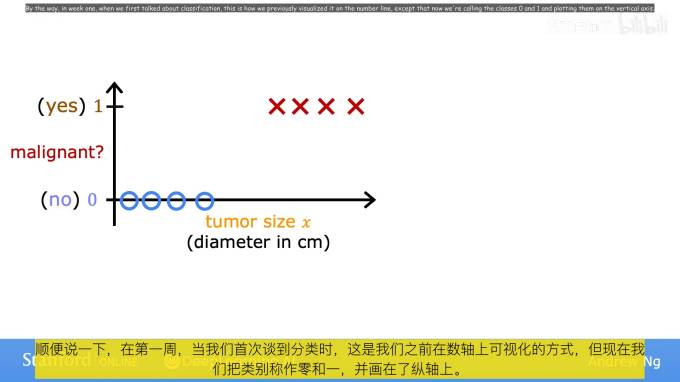
05:23现在，你可以在这个训练集上尝试的一件事是，应用你已经知道的算法，即线性回归，并试着用一条直线去拟合数据。
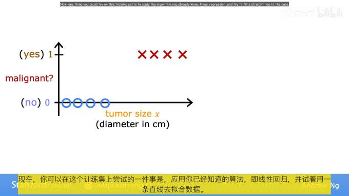
05:34如果你这样做，也许这条直线看起来像这样，对吗？
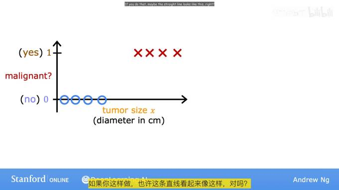
05:42线性回归不仅预测零和一这两个值，它预测所有介于零和一之间的数字，甚至小于零或大于一的数。
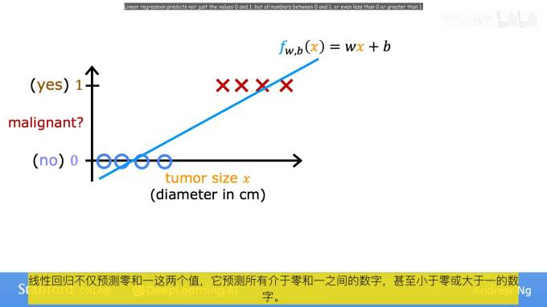
05:53但在这里，我们想要预测的是类别。
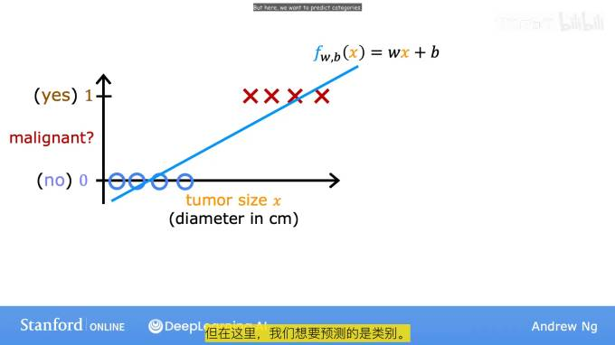
05:57你可以尝试的一件事是选取一个阈值，比如说零点五，这样如果模型输出一个低于零点五的值，那么你就预测 y 等于零，即非恶性。
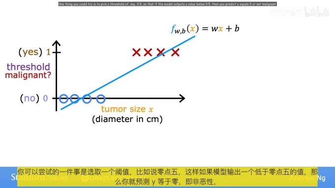
06:12而如果模型输出一个等于或大于零点五的数字，则预测 y 等于一，即恶性。
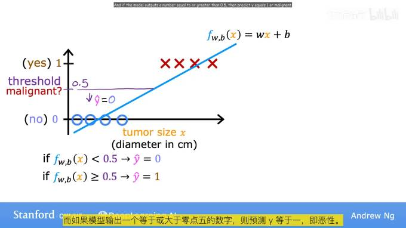
06:21注意，这个阈值零点五在这一点与最佳拟合直线相交。
06:30所以，如果你在这里画一条垂直线，所有左侧的最终预测为等于零，而所有右侧的最终预测为 y。
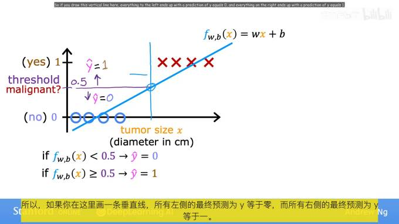
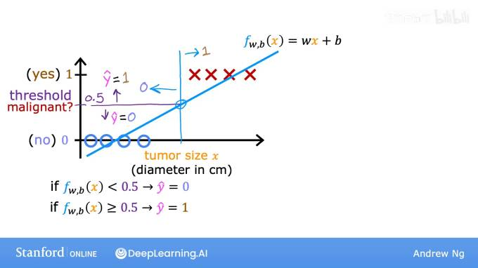
06:42现在，对于这个特定的数据集，看起来线性回归似乎可以做出一些合理的推断。
06:50但是现在，我们来看看如果你的数据集再多一个训练样本会发生什么，这个样本就在这里，在最右。
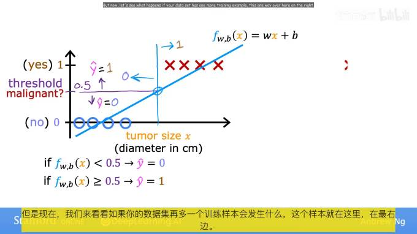
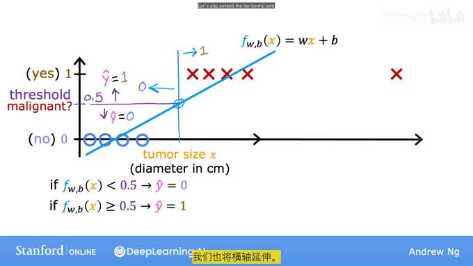
07:03请注意，这个训练样本本不应该真正改变你对数据点的分类方式。
07:10我们刚才画的这条垂直分割线，作为分界线仍然是有意义的，即比这小的肿瘤应分类为零，比这大的肿瘤应分类为一。
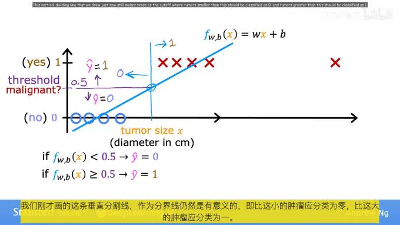
07:22但是，一旦你在右侧添加了这个额外的训练样本，线性回归的最佳拟合线将会像这样移动。
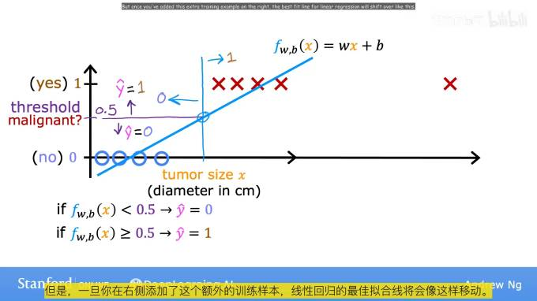
07:31而如果你继续使用零点五的阈值，你现在会注意到，这个点左侧的一切都被预测为零，非恶性，而这个点右侧的一切都被预测为一或恶性。
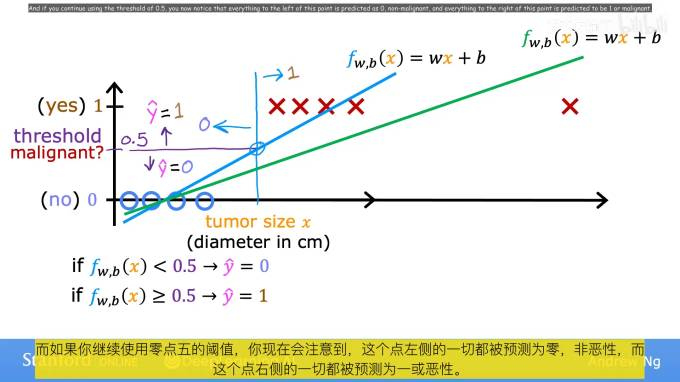
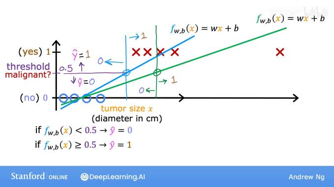
07:49这并非我们想要的，因为将在很右边添加那个样本，不应该改变我们关于如何分类恶性肿瘤和良性肿瘤的任何结论。
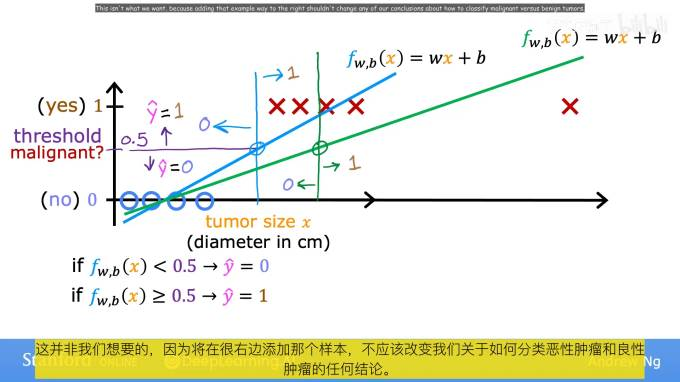
08:00但如果你尝试用线性回归来做这件事，加上这一个感觉本不应该改变任何事情的样本，最终却导致我们为这个分类问题学习到了一个差得多的函数。
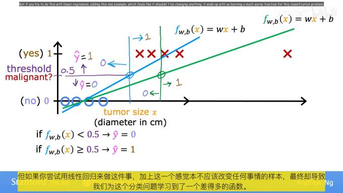
08:15显然，当肿瘤很大时，我们希望算法将其分类为恶性。
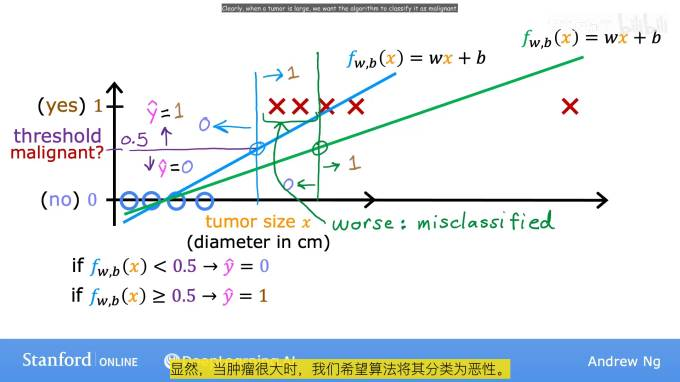
08:22所以我们刚才看到的是，线性回归导致最佳拟合线在我们在右侧多加一个样本时发生了移动，因此分割线，也称为决策边界，也向右移动了。
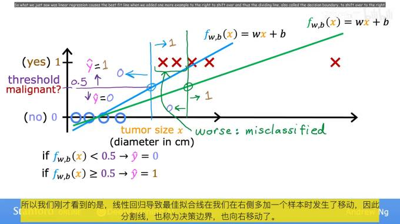
08:39你将在下个视频中学习更多关于决策边界的内容。
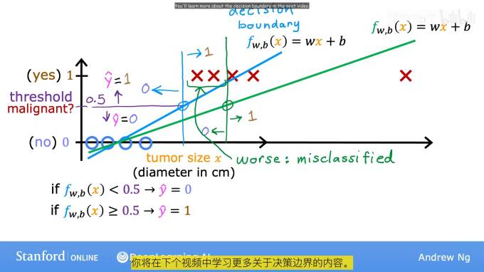
08:44你也会学习一个叫做逻辑回归的算法，其结果的输出值将始终介于零到一之间，并且该算法将避免我们在这张幻灯片上看到的这些问题。
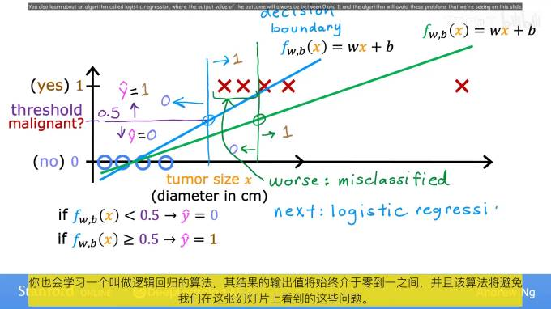
08:59顺便说一下，关于逻辑回归这个名字，一件令人困惑的事是，尽管名字里有“回归”二字，它实际上却用于分类。
09:09不要被这个名字迷惑，它是因为历史原因而得名的。
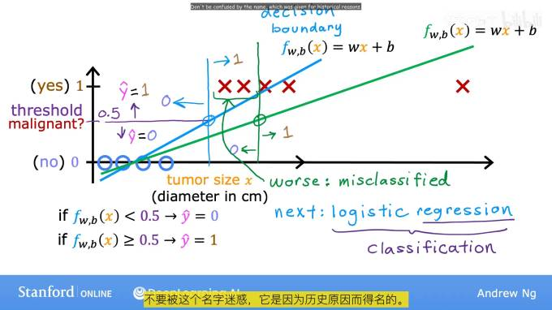
09:14它实际上用于解决二元分类问题，其输出标签要么是零，要么是一。
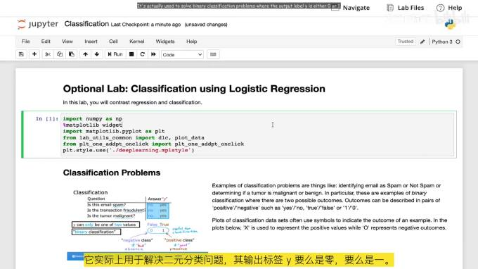
09:22在接下来的选修实验中，你也将看看当你尝试使用线性回归进行分类时会发生什么。
09:31有时你运气好，它可能行得通，但通常它无法很好地工作，这就是为什么我自己不将线性回归用于。
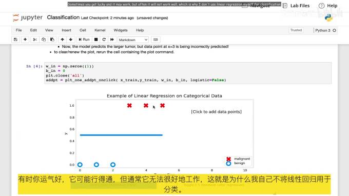
09:42在选修实验中，你会看到一个尝试在两个类别间进行分类的交互式图表，希望你能注意到这通常是无法很好运作的，这没关系，因为这激发了我们使用不同模型来做分类任务的需求。
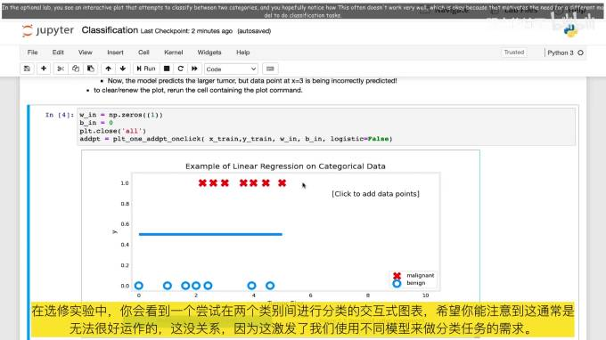
10:05所以，请看看这个选修实验，之后，我们将进入下一个视频，去看看用于分类的逻辑回归。